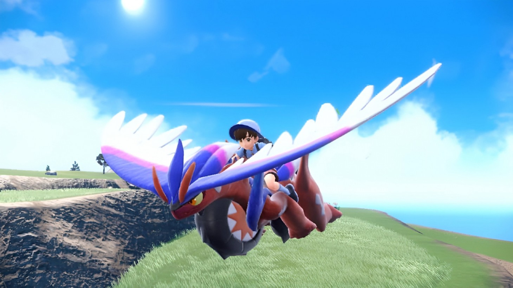
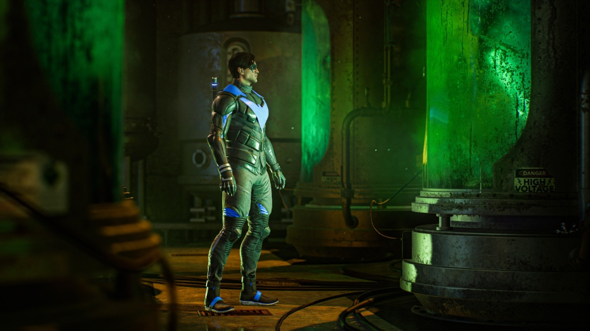
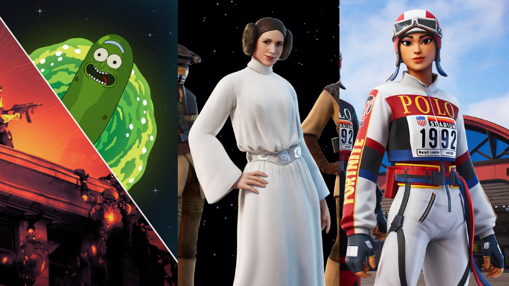

A Battle Between New And Old

Going into my hands-on time with Pokémon Scarlet, I was expecting some changes based on the ninth generation’s embrace of open-world gameplay and a “do what you want when you want” mentality with its three primary story paths. Pokémon has yet to take the massive generational shift I’ve dreamed of for years and has instead opted for half-steps with each new entry. Scarlet isn’t the transformation I hoped for, but it’s significantly more than a simple half-step, representing arguably the most considerable shift in mainline Pokémon history.
I explored a small portion of the overall Scarlet map for roughly an hour, though it appeared much larger in-game. I saw three objective markers across a valley and a desert area, each representing one of the three main story paths: the Victory Road path, which is the standard eight-gym storyline seen throughout the series, the Path of Legends, consisting of tracking and battling Titan Pokémon, and Starfall Street, a unique take on the Team Rocket-esque plotline found in every mainline entry. Determined to experience a little bit of all three, I took off from the southern region of the map toward a Path of Legends marker, and I did so atop Koraidon, the legendary Pokémon adorning the Scarlet box.
Pokémon Legends: Arceus inspiration is clearest here because, like Arceus’various helpful Pokémon, Koraidon can glide through the air, swim through lakes and oceans, and climb up cliffs. Plus, you can ride atop it anywhere, making traversal across Paldea much faster than on foot. I loved being able to do this as it made the open world feel seamless and sped up a formula of gameplay that can, at times, feel slow. I was even more surprised by how seamless the world actually is, riding Koraidon aside.
Hands-On Impressions And Key Takeaways

Gotham Knights launches in just a couple of weeks, and Batman fans have been excited – and trepidatious – about the Bat clan’s big family adventure. To find out how the project is shaping up, I took a trip to Warner Bros. Montreal to play two hours of the game. I spent time-fighting crime as all four characters, explored Gotham’s open world, and took down criminals alongside a co-op partner. I also chatted with the dev team to uncover more nuggets about what the adventure brings to the table. Here are some general hands-on impressions and intriguing fun facts I learned about the Gotham Knights as the march towards its October 21 launch draws near.
I suited up as all four heroes at different points during my two-plus-hour play session. Combat feels markedly different than the Arkham games, which, if you haven’t been keeping up with Gotham Knights, may surprise you.
The game has a single melee attack button used to execute simple combos. Gotham Knights feel less snappy than the rapid-paced, combo-driven rhythm of the Arkham games, mainly due to the elaborate animations accompanying each assault. It was off-putting at first, but I gradually fell into the game’s more straightforward approach, though I would like a bit more weight behind the offense.

There's a lot going on in Fortnite this week ranging from a new Ralph Lauren "Polo" collaboration to a Pickle Rick back bling you can earn to the return of Skywalker Week in Epic Games' popular battle royale. With so much happening this week in the game, we decided to group it all together here for your easy viewing.
A new collaboration is live in Fortnite with Ralph Lauren's Polo, inspired by the designer's 1992 Stadium collection which "infused the worlds of auto-racing and aviation." You can rock this look in-game thanks to the new Polo Stadium Collection Set, which includes new outfits, back blings, and more. It's available starting Saturday, November 5 at 8 p.m. ET.
Fortnite has Morty Smith, his sister Summer Smith, Rick Sanchez, and even others like Mr. Meeseeks, but now, finally, Pickle Rick has entered the game. Unlike the skins just mentioned, Pickle Rick is not a skin but rather a back bling that can be earned through playing the game.
Post-Fortnitemares Horde Rush Quests have arrived and each quest you complete earns you Horde Rush Quest XP. Complete eight of these quests and you'll unlock the Pickle Rick back bling.